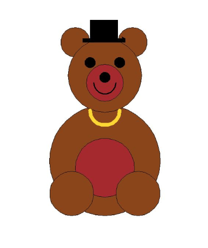

Home
Portfolio
About Me
My Portfolio

1.1.9 Build A Bear Project

Build your own bear! It adds a little bit more love to life. Our invention is exactly like the ones in real life, but better. Add some style with your bear’s necklace, hat, and phone. Make your bear any color with any accessory, with endless combinations! Once you start the code, you are presented with a series of questions within VS code. This series of questions include yes/no and color-based questions to help you personalize your bear. Depending on your answers to these questions, the code will execute a specific response to apply it on the bear.
Using App Inventor to make app game Duck Hunter.
Interactive Fiction Rags to Riches.
Black Jack game written in Python.
Modified bits in pictures.
Use data files to create graphs.
Using netlogo do remix of illusions.
Interactive Fiction Rags to Riches.